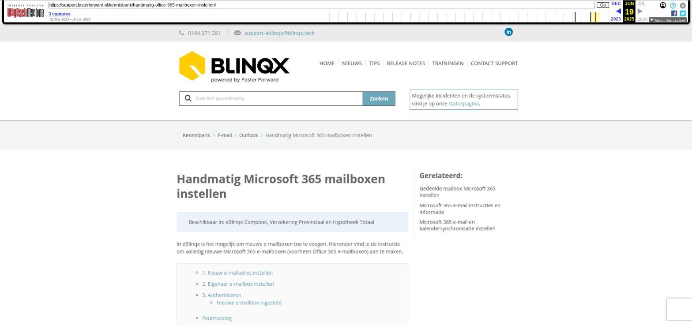

Handmatig Microsoft 365 mailboxen instellen

Tekstinhoud
Handmatig Microsoft 365 mailboxen instellen
Beschikbaar in: eBlinqx Compleet, Verzekering Provinciaal en Hypotheek Totaal
In eBlinqx is het mogelijk om nieuwe e-mailboxen toe te voegen. Hieronder vind je de instructie om volledig nieuwe Microsoft 365 e-mailboxen (voorheen Office 365 e-mailboxen) aan te maken.
1. Nieuw e-mailadres instellen
2. Eigenaar e-mailbox instellen
3. Authenticeren
Nieuwe e-mailbox ingesteld
Foutmelding
Gedeelde mailbox instellen
Office 365 e-mail instructies en informatie
1. Nieuw e-mailadres instellen
Let op: niet iedereen heeft het recht om dit te doen. Als je hier geen recht tot hebt, neem dan eerst contact op met de interne eBlinqx beheerder van je organisatie.
Ga naar het startscherm van de e-mailmanager en druk daar op de '+'
Vul hier links, onder Algemeen, alle gegevens in (naam, omschrijving, afzendernaam en afzenderadres).
Kies rechts, onder Serverinstellingen, bij type 'Office 365'
Ons advies is om 'Verstuur via Office365' op 'Ja' te zetten. De e-mails worden dan verzonden vanuit de uitgaande server Office365. Het is dan niet nodig om de SPF, DMARC en DKIM in te stellen. En de e-mails die verzonden zijn vanuit eBlinqx zijn ook zichtbaar in de verzonden map in Office365, bijvoorbeeld als je deze bekijkt op je telefoon. Zet je deze instelling op 'Nee' dan zijn de verzonden items niet terug te zien in Office365 en is het noodzakelijk om de SPF, DMARC en DKIM in te stellen.
Zet de interval op 5 minuten.
Sla op met het opslaanicoon.
2. Eigenaar e-mailbox instellen
Vervolgens selecteer je via het tabblad 'Eigenaar' de persoon of personen die de e-mailbox in mogen zien. Via het blauwe pijltje zoek je eerste de organisatie op om vervolgens de gebruikers te koppelen met het pijltje achter de gebruiker. Het is ook mogelijk om een gehele workflowgroep aan de e-mailbox te koppelen. Let op: iedereen die in deze workflowgroep zit, kan dan de e-mailbox inzien.
3. Authenticeren
Wanneer de e-mailboxen en de eigenaren zijn toegevoegd, ga je naar de e-mailbox in je e-mailmodule. Hier staat dan de melding dat de e-mailbox nog geauthenticeerd moet worden.
Door op de link te klikken, kom je in het inlogscherm van Windows en direct uit bij het goede scherm voor de authenticatie.
Het kan zijn dat jij zelf niet toestemming mag verlenen, maar dat de beheerder van Office 365 dit dient te doen. Wanneer dit het geval is en er geen toestemming is verleend door de beheerder, dan krijg je de volgende melding te zien.
Neem contact op met de Microsoft 365 beheerder van je organisatie om dit op te lossen.
Nieuwe e-mailbox ingesteld
Indien de e-mailbox geauthenticeerd is, komen op de nieuwe e-mailbox de e-mails binnen.
Foutmelding
Wanneer je de volgende foutmelding krijgt, is eBlinqx niet ingericht om Microsoft 365 te gebruiken. Stuur dan een e-mail naar support-eblinqx@blinqx.tech om dit in te laten richten.
Gedeelde mailbox instellen
Bij Microsoft 365 is het mogelijk om gebruik te maken van een shared mailbox. Deze mailboxen moeten op een andere manier aangemaakt en ingesteld worden. In dit artikel lees je er meer over.
Office 365 e-mail instructies en informatie
Tussen eBlinqx en Outlook/Microsoft 365 vindt er een synchronisatie plaatst. Dit is van invloed op gelezen/ongelezen berichten, het verwijderen en verplaatsten van berichten. Hier kan je daar meer over lezen.
Laatste update: 13 mei 2025
Tagged: e-mailbox, mailbox
Was deze informatie nuttig?
Ja Nee